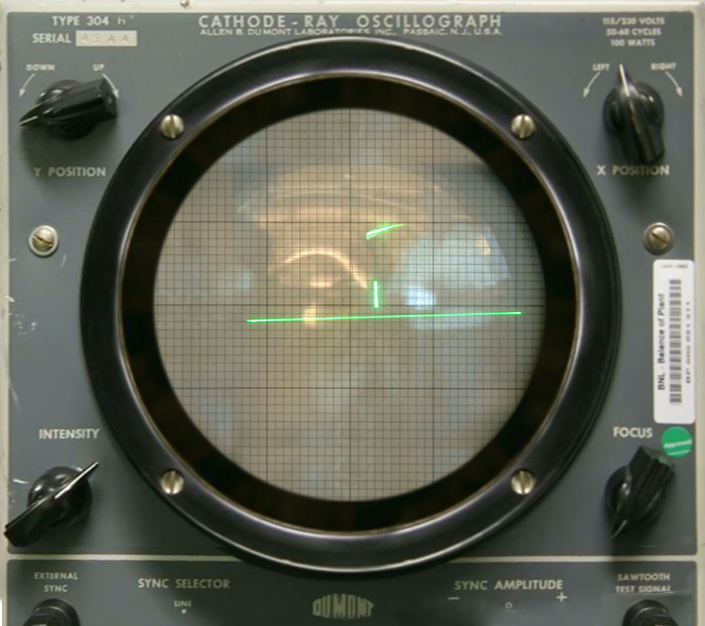
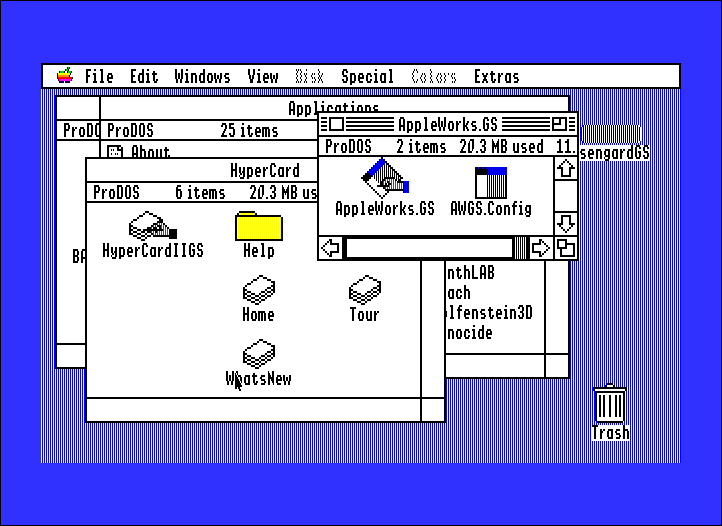

Graphics Processing Unit
What is the point of having GPUs?
Before the GPU
The Early Days
Prior to us having GPUs, the main way we used to get graphics on the screen was by means of using analog signals (not even CPUs!!) for such tasks. Well, not exactly as you'd expect it. The first actual "game" as we got to know it that actually had to render something was done actually on an oscilloscope. By "programming" the oscilloscope, you were able to get something that resembled graphics. Take Tennis For Two played on a Cathode Ray Oscillograph.

That's great and all but it's not really graphics. We're manipulating electric signals in order to display a wave. Sure it's the smoothest we're going to get for a while but it's incredibly limiting. We can't for example animate anything yet. Or even have the concept of what a pixel is.
Software rendering
By the 1970s computers had started becoming quite a commodity. You'd be able to get a TRS-80 or an Apple II and do computing at your home (very expensively that is). At this point in time, we didn't really need complex graphics, because to us computers were basically just more complex calculators. However, they needed a manner to actually get those pixels lit up.
Display Controller
While the concept of a display controller applies to this day, back in those times it was the only method of actually getting graphics on the screen. Using the processor to - on a per canvas basis - draw a set of pixels. All done in software; and all done very slowly.

The display controller was necessary however because, to this day, we still need to transform any and all software representations into an analog signal. But the problem currently is that the display controller is the only fast part of the chain of displaying graphics.
The Early Days of pixels
While the concept of a GPU as we've come to know it today took a while to really come out, the basis of what allows us today to talk to a computer in natural language started quite in the early days. We realized that by instead of using a processor that's good for everything, using a cluster of cores specifically with the purpose of computing mathematics and especially vector operations we're able to infinitely speed up the process of lighting up pixels on a screen.
Stuff like geometry coprocessors as well as matrix multipliers became standard on computers around the early 80s, and with the introduction of FPUs via the 8087 coprocessor in 1980 leading to the creation of IEEE 754.
Fixed function!?
In 1996 3dfx really hit it out of the park with the introduction with the first ever, fixed function accelerator; The 3dfx Voodoo Graphics PCI. It was the first ever dedicated expansion card to consist of a Digital to Analog Converter, a Frame Buffer Processor and a Texture Mapping Unit. It featured an enormous 4 million bytes of dedicated Dynamic Random-Access Memory. And was used specifically for textures, buffering, shading and compositing.
Enter the modern age
With the release of the nVidia GeForce 256 so came the nomenclature of a GPU. A Graphics Processing Unit which finally combined a display controller, texture mapping units, pixel shaders, and for the first time ever in a graphics processor, a standalone combined texture, clipping and layer pipeline.
CUDA
Compute Unified Device Architecture is the most important thing to happen to GPUs with respect to the topic at hand. In 2006 Nvidia releases CUDA, and with it, the capability of making a GPU perform operations on many data with a single thread, or SIMT for short. It allows to, say, take a matrix, and perform compute on the entire matrix with just one instruction.